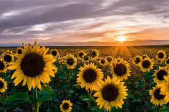
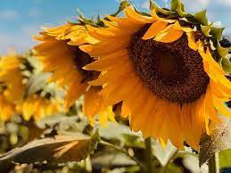

Sunflower

Sunflowers are beautiful and vibrant flowers that can bring cheer and charm to any garden. Here are the steps to plant sunflowers and enjoy their bright blooms:
- Select a suitable location for your sunflowers. They thrive in full sunlight, so choose an area that receives at least 6-8 hours of direct sunlight per day.
- Prepare the soil by removing weeds and loosening it with a garden fork or tiller. Sunflowers prefer well-drained soil, so ensure proper drainage.
- Sow sunflower seeds directly into the soil or start them indoors and transplant later. Plant the seeds about 1-2 inches deep and 6-12 inches apart, depending on the variety.
- Water the seeds thoroughly after planting and keep the soil consistently moist until the seedlings emerge.
- As the sunflower seedlings grow, thin them out to maintain proper spacing between plants. Leave the strongest and healthiest seedlings, and remove the weaker ones.
- Provide support for tall varieties of sunflowers by staking or using a trellis. This helps prevent them from bending or toppling over due to strong winds or heavy flower heads.
- Water the sunflowers regularly, especially during dry periods. Aim to keep the soil evenly moist but not waterlogged.
- Apply a layer of organic mulch around the base of the sunflowers to conserve moisture, suppress weeds, and regulate soil temperature.
- Monitor the plants for pests and diseases, and take appropriate measures to control them if necessary.
- Enjoy the magnificent blooms of sunflowers as they follow the sun and brighten up your garden!
About Sunflower

Sunflowers are iconic flowers known for their large, yellow blooms and tall stature. They belong to the genus Helianthus and are native to North America. Sunflowers are not only visually stunning but also have several interesting characteristics:
- Growth and Height: Sunflowers can grow to impressive heights, with some varieties reaching up to 10 feet or more. Their sturdy stems and large leaves provide support for the enormous flower heads.
- Heliotropism: Young sunflowers exhibit heliotropism, meaning they follow the movement of the sun across the sky. They face east in the morning and gradually turn west as the day progresses, always seeking maximum sunlight.
- Seed Production: Sunflowers are valued for their seeds, which are not only a popular snack but also a source of oil and bird feed. Sunflower oil is widely used in cooking and as a healthy alternative to other oils.
- Cultural Significance: Sunflowers have cultural significance in various societies. They symbolize happiness, adoration, and loyalty and have been featured in art, literature, and folklore.
- Ecosystem Support: Sunflowers attract bees, butterflies, and other pollinators with their bright colors and abundant nectar. They play a vital role in supporting pollinator populations and promoting biodiversity.
Benefits of Growing Sunflowers

Growing sunflowers offers several benefits for both gardeners and the environment:
- Visual Appeal: Sunflowers' vibrant yellow blooms add a cheerful and eye-catching element to gardens, landscapes, and floral arrangements.
- Educational Opportunities: Growing sunflowers can be a fun and educational activity for children and adults alike. It provides hands-on learning about plant growth, pollination, and the natural world.
- Wildlife Habitat: Sunflowers attract a variety of beneficial insects, birds, and pollinators, contributing to a healthy ecosystem and supporting local wildlife populations.
- Sustainable Farming: Sunflowers can be cultivated as a sustainable crop for their seeds and oil. They require fewer pesticides compared to some other crops and can be grown using organic farming methods.
- Seed Harvesting: Harvesting sunflower seeds from mature flower heads allows you to enjoy their nutritional benefits as a snack or use them in cooking and baking.
- Aesthetics and Landscaping: Sunflower fields or borders can create stunning visual displays and serve as attractive backdrops for photography or outdoor events.